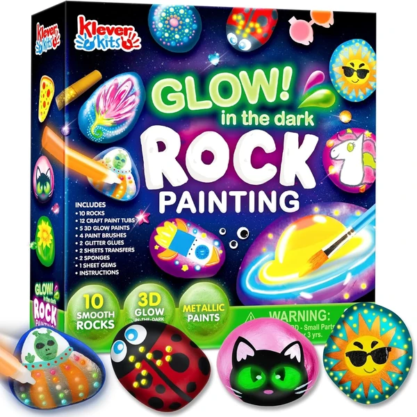

👶 9 años
JOYIN Kit de Rocas para Pintar
Un set con 10 rocas y 18 tipos de pintura, incluyendo colores metálicos y que brillan en la oscuridad. Incluye pegamento con purpurina, gemas y pegatinas para decorar cada roca de forma única.
⭐
¿Por qué nos gusta?
- ✔18 pinturas distintas, incluidas las que brillan en la oscuridad.
- ✔Incluye gemas y pegatinas decorativas.
- ✔Actividad ideal para hacer en familia.
💬
Lo que más destacan las familias
Muchos padres coinciden en que la variedad de pinturas, especialmente las que brillan en la oscuridad, mantiene el interés de principio a fin. Es una actividad que se disfruta tanto en solitario como en grupo, por ejemplo en fiestas de cumpleaños.